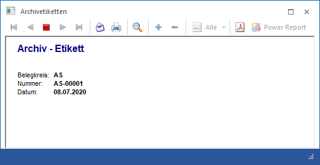
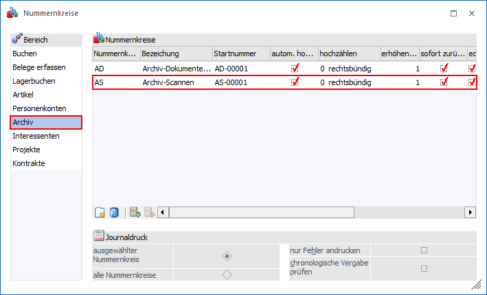
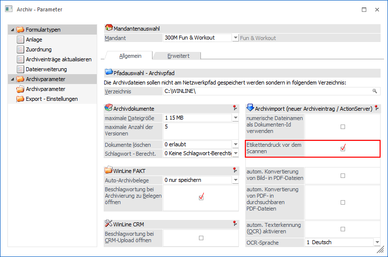
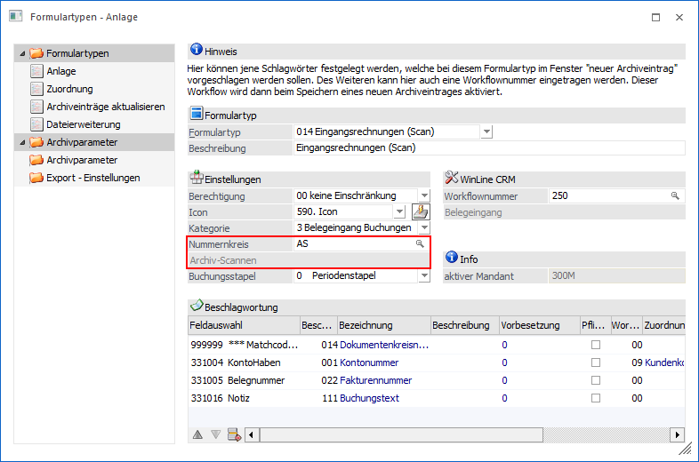
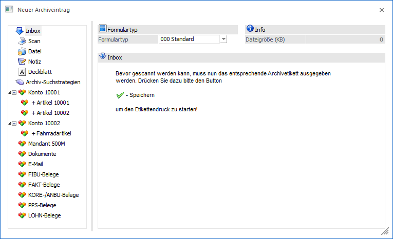
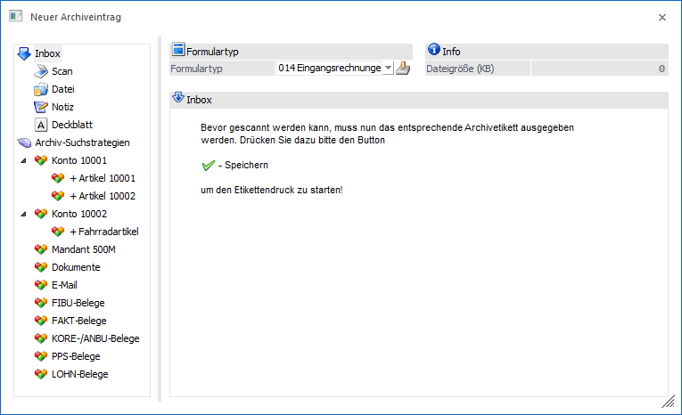
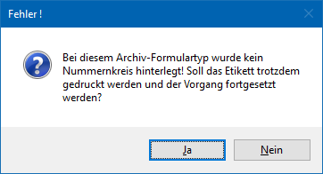
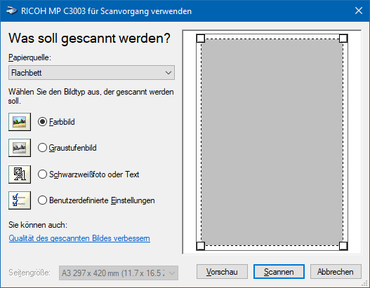

Wird im Menüpunkt…
1 Datei
1 Neuer Archiveintrag
… der "Scan"-Button angewählt, kann automatisch ein Archivetikett zu dem entsprechenden Scan erzeugt werden.
Beispiel
Für die Archivierung von Belegen (z.B. Eingangsrechnungen) soll eine eindeutige Nummer vorhanden sein. Dazu wird ein Nummernkreis vergeben und dieser beim Formulartyp hinterlegt.
Vor dem Scannen der Eingangsrechnungen kann jeweils ein Etikett mit der eindeutigen Dokumentennummer (laut Nummernkreis) gedruckt und dieses auf die Eingangsrechnung geklebt werden.

Voraussetzung
Folgende Voraussetzungen müssen hierfür erfüllt werden:
ü
Nummernkreis
In den
Programmbereichen WinLine FIBU oder WinLine FAKT muss im Menüpunkt
"Nummernkreise" (Stammdaten - Nummernkreise) ein Nummernkreis für den Bereich
"Archiv" definiert werden.

ü Option "Etikettendruck vor dem Scannen"
In den
Archivparametern (WinLine ADMIN -
Archiv - Archivverwaltung - Parameter) muss die Option "Etikettendruck vor dem
Scannen" aktiviert worden sein.

ü Zuweisung des Nummernkreises
Der zuvor
definierte Nummernkreis muss in dem
zum Scannen verwendeten Formulartyp hinterlegt werden (WinLine ADMIN - Archiv -
Formulartypen - Bereich "Anlage - Feld "Nummernkreis").

Scanvorgang mit Archivetikett
Nachfolgend werden die einzelnen Punkte zur Durchführung des Scanvorgangs mit Archivetikett beschrieben:
ü Scanvorgang starten
Im Menüpunkt "Neuer Archiveintrag" (CRM - Neuer
Archiveintrag) wird über den "Scan"-Button der Scanvorgang
gestartet.

ü
Formulartyp auswählen
Nun wird
der Formulartyp mit dem entsprechenden Nummernkreis ausgewählt und anschließend
mit dem Button "OK" bzw. der Taste F5 bestätigt.

Hinweis
Wenn ein Formulartyp ohne hinterlegtem
Nummernkreis ausgewählt wird, kann der Scanvorgang mit Etikettendruck zwar
fortgesetzt werden, das Archivetikett wird jedoch ohne Nummer
gedruckt.

ü Druck der
Archivetiketten
Nach dem Bestätigen des Formulartyps wird automatisch über
die TWAIN-Schnittstelle der Scanner angesprochen und die Scannersoftware
gestartet.

Hinweis
Standardmäßig wird bei der Archivierung das Etikettenformular P99W206AE verwendet. Pro Formulartyp kann aber ein eigenes Formular erstellt werden, dass unter dem Namen P99W206AE + Nummer des Formulartyps abgespeichert wird.
Beispiel
Für den Formulartyp "014 - Eingangsrechnungen (Scan)" würde vom Programm automatisch das Formular P99W206AE014 verwendet werden. Ist dies nicht vorhanden, wird auf das "Standard"-Formular P99W206AE zurückgegriffen.